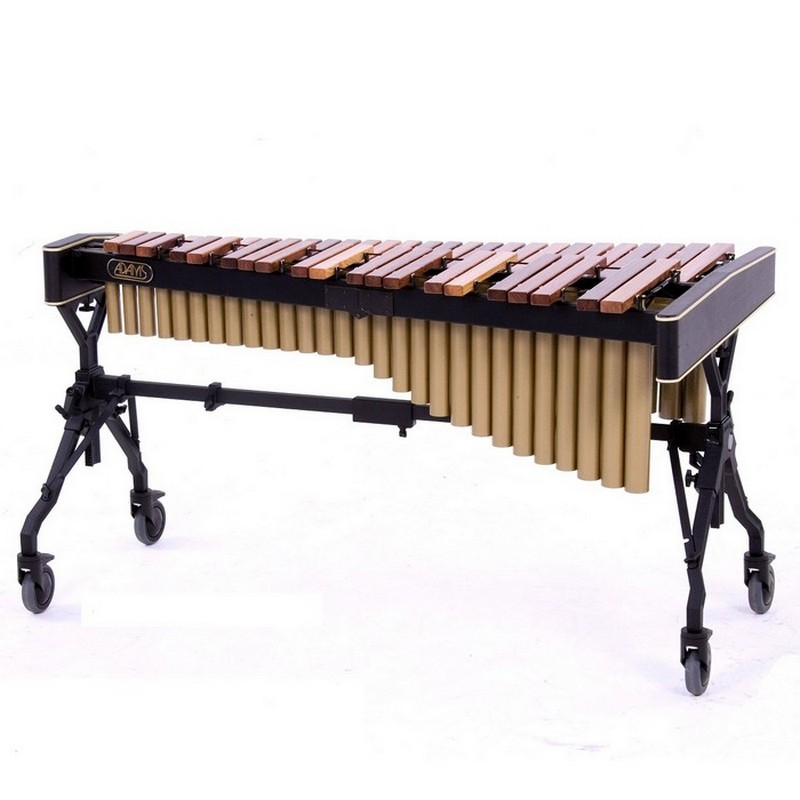
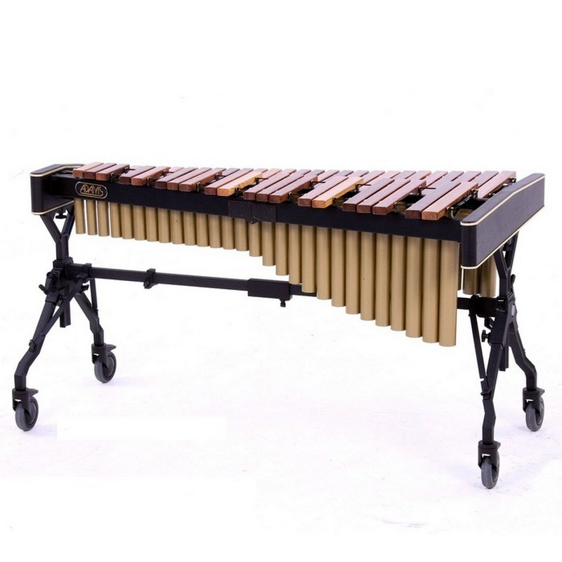
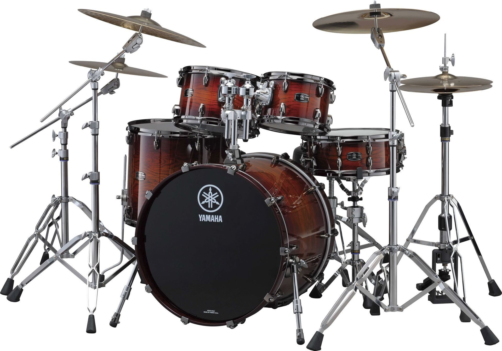
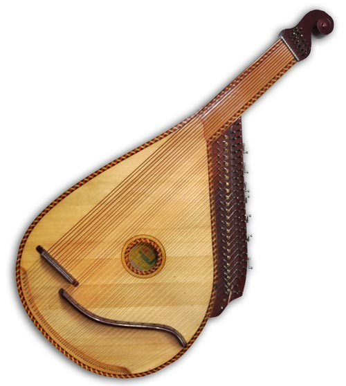
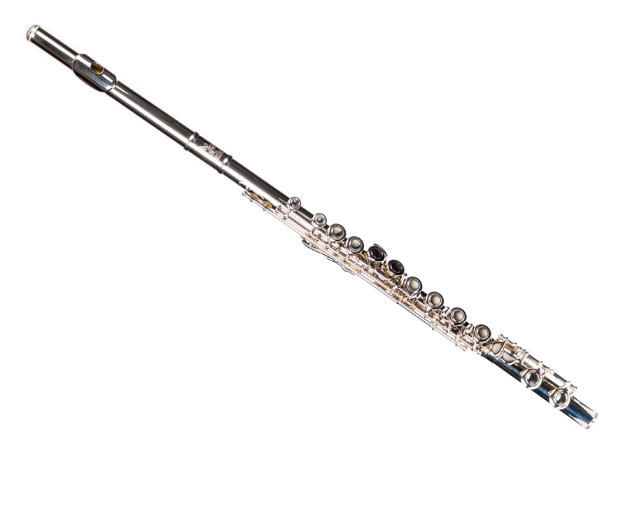
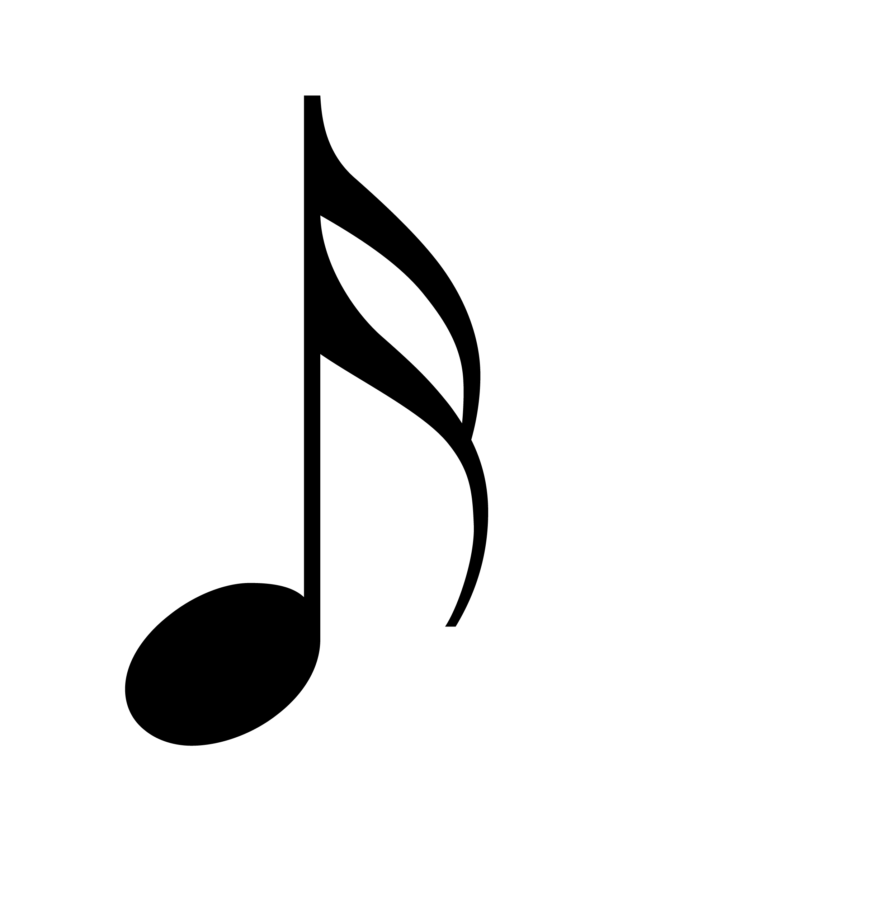

Ідіофони
Джерелом звуку є коливання самого тіла інструменту, напр. дзвін, ксилофон, трикутник, тарілки, кастаньєти, гонги та ін.
Основоположна класифікація, що базується на басових музичних інструментах, була розроблена французькими музикологами Ф. Гевартом («Nouveau traite d'instrumentation», 1885), В. Ш. Махійоном (англ. Victora Charlesa Mahillona), та вдосконалена австрійськими вченими Е. М. фон Хорнбостела (англ. Ericha Moritza von Hornbostela) i К. Заксом (англ. Curta Sachsa), в 1914 році. Ця класифікація отримала назву Класифікації Закса-Хорнбостеля. За цією класифікацією музичні інструменти поділяються залежно від джерела звуку наступним чином:
Джерелом звуку є коливання самого тіла інструменту, напр. дзвін, ксилофон, трикутник, тарілки, кастаньєти, гонги та ін.
Джерелом звуку є коливання натягнутої мембрани, по якій вдаряють руками або спеціальним приладом (паличками, калаталкою тощо). До мембрафонів належать барабани, литаври, том-томи та ін.
Джерелом звуку є коливання натягнутої струни (або кількох струн).
Джерелом акустичних коливань є стовп повітря, замкнений в резонансному просторі стовбуру інструменту.
Люди з давніх часів створюють і удосконалять різні музичні інструменти. У Африці, Південній Америці, Азії декілька сторіч тому корпусом для струнних інструментів був звичайний гарбуз, а в арабському двострунному ребабе для цієї мети служить панцир черепахи. Нубійські людоїди зробили колись живописний кісар з людським черепом. Стародавні рибаки всіх країн освоювали раковини, гончари-глиняні горщики. Надуті свинячі міхури, берестяні короби – все це людина примушувала підспівувати струнам.
Але після тисячі перевірок і проб кращим матеріалом виявилося дерево. З нього виходили найдзвінкіші, найлегші і найчуйніші корпуси струнних інструментів.
Для струн теж випробовували дуже багато матеріалів. І кручена деревна кора, і нитки бамбука, і бичачі жили, і сушені мавпячі кишки, і, звичайно, метал – разні сорти і сплави, різна товщина, міцність.
Окрім корпусу і струн в більшості інструментів є ще шийка. Її із самого початку робили дерев'яною, зате над формою шийки музичні майстри попотіли немало. Пряма шийка-гриф – ось до чого прийшла врешті-решт музична техніка.До рівної дошки музиканти стали притискати струни пальцями, і замість чотирьох-п'яти (по числу струн) звуків відразу отримали великий їх запас. Можливості музичної творчості розширилися безмежно. Приблизно п'ять тисяч років назад ассірійці і вавілоняни звели воєдино три винаходи: дерев'яний корпус, широку пряму шийку і кілки для роздільного натягування струн. Так народився чотириструнний інструмент, який араби пізніше прозвали "аль-уд".
І саме він став, по суті, першим зразком знаменитої багатострунної лютні. Поступово вона підкорила Персію, Індію, Китай, а через 22 століття – Європу. До цього часу вона значно удосконалилася. На шийці з'явилася тверда пластинка-гриф, на ньому замість нав'язаних шнурками або жильних ладів – кістяні.
У середньовіччі в житті європейців лютня зайняла таке ж міцне положення, як в наші дні рояль чи гітара. Проте через деякий час гітари, мандоліни і, звичайно, скрипки поступово витіснили лютню з місця, яке вона займала на протязі стількох століть, оскільки в порівнянні з простими і всім доступними новими інструментами лютня здавалася занадто громіздкою, складною і безнадійно старомодною.
 Можна лише здогадуватися про витоки історії музичних інструментів, і майже напевно перші з них були ударними. Як прабатька сучасних струнних
інструментів багато дослідників висувають "музичний" лук. Міняючи натягнення тятиви, згинаючи і розгинаючи дугу лука, можна міняти висоту звуку,
який створюється тятивою, але звук в цьому випадку виходить слабким.
Можна лише здогадуватися про витоки історії музичних інструментів, і майже напевно перші з них були ударними. Як прабатька сучасних струнних
інструментів багато дослідників висувають "музичний" лук. Міняючи натягнення тятиви, згинаючи і розгинаючи дугу лука, можна міняти висоту звуку,
який створюється тятивою, але звук в цьому випадку виходить слабким.

Сайт створено: